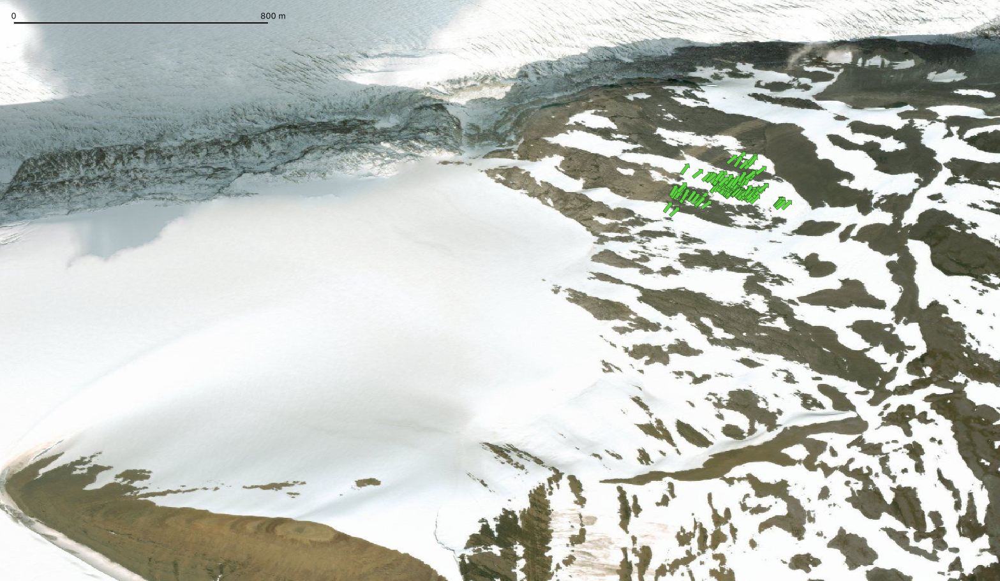
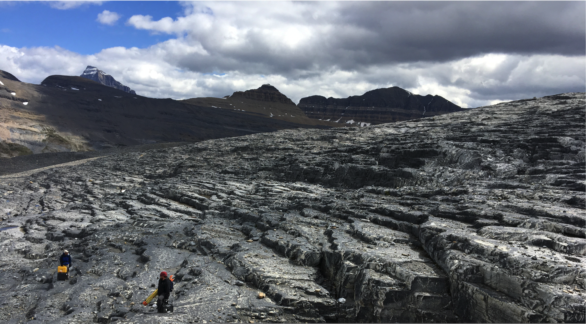
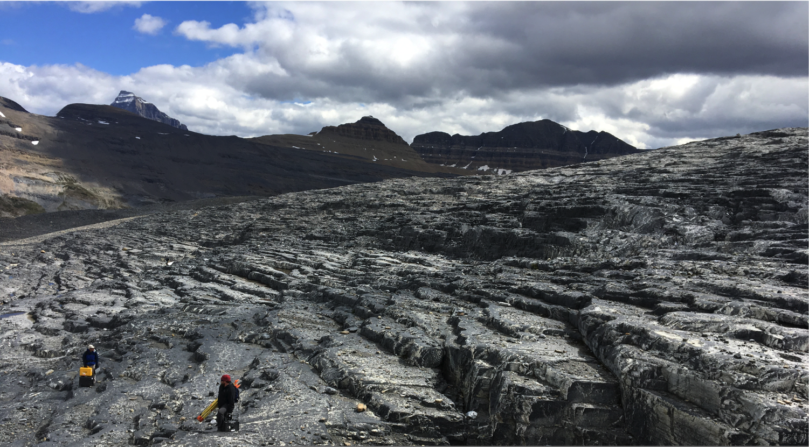
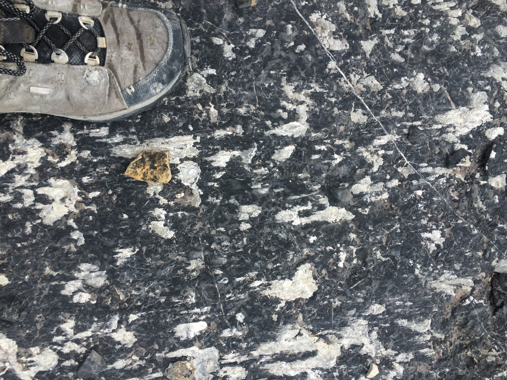
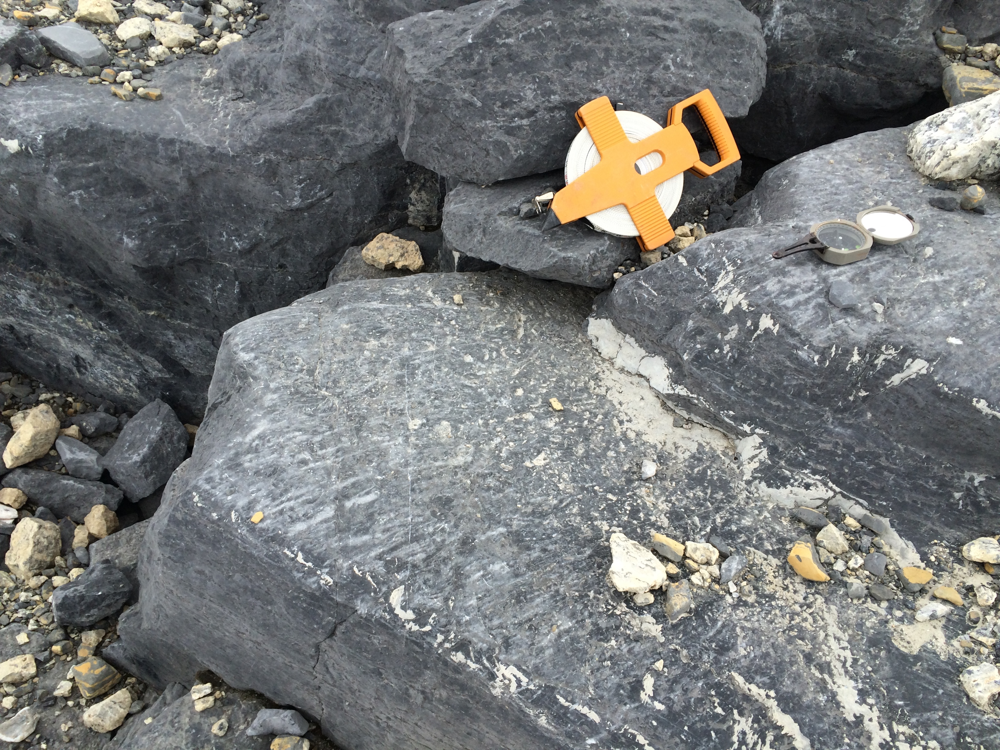
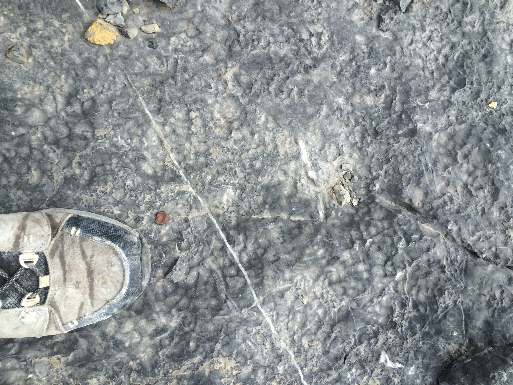
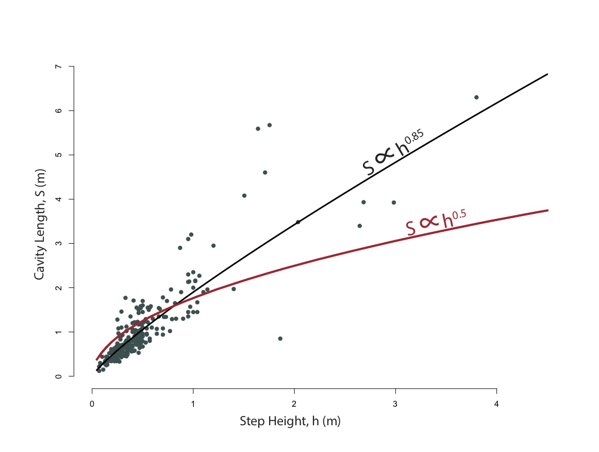
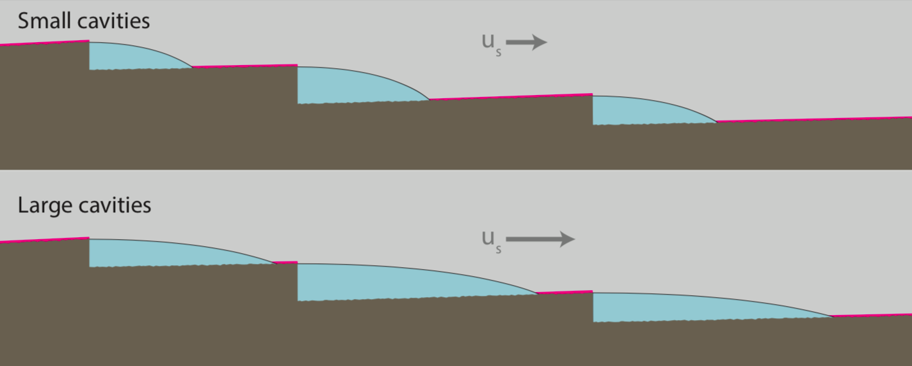
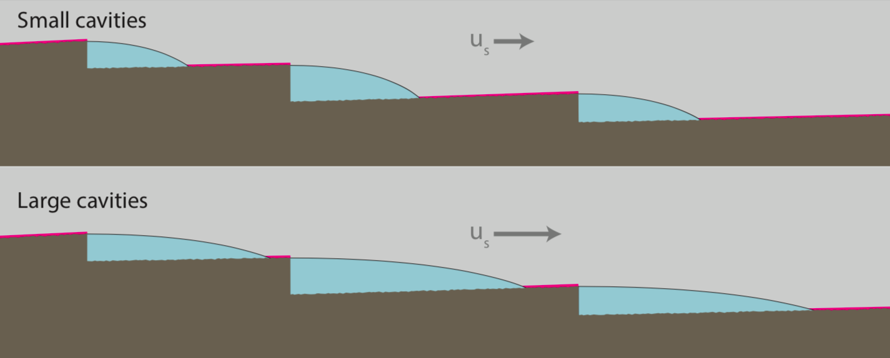

I visited Castleguard Forefield in Banff National Park, Alberta, Canada, during my first season of fieldwork with Neal Iverson. I assisted Neal, Luke Zoet, and Jake Woodard with their collection of LiDAR and SFM data to create a DEM. Meanwhile, I measured striation orientations to interpret flow direction. The limestone of the forefield has weathered into limestone steps that created cavities between the ice and rock. In addition to striation orientation, I measured step height and cavity length to analyze the relationship between the two.
The map below shows Castleguard Glacier (left) flowing towards its forefield (right), where measurements were taken. The green arrows show striation orientations, which reveal the flow direction of ice when it covered that area.
Anna C. Thompson, Neal R. Iverson, Lucas K. Zoet
Open poster as a pdfWater-filled cavities, where the basal ice of sliding glaciers separates from bedrock, modulate subglacial hydrology and glacier sliding speed. Accurately assessing the factors that control cavity size is thus a central goal in efforts to model the dynamics of sliding glaciers and ice sheets. Retreat of Castleguard Glacier (Fig. 1) has exposed its former bed (Fig. 2), allowing us to analyze the relationship between limestone step height and associated cavity size.
 

A simple theoretical relationship (Equation 1), tested experimentally, describes cavity length as a function of step height, sliding speed, effective pressure and the flow-law parameters of temperate ice (Fig. 3).
Dissolution features immediately down-glacier from limestone steps provide evidence of former water-filled cavities, while striations and CaCO3 precipitate indicate ice-rock contact that defines the maximum extent of ice-bed separation (Fig. 4). We measured the heights and corresponding cavity sizes of several hundred steps using these features to delimit the maximum extent of subglacial cavities (Fig. 5).
  Measurements indicate centimeter to meter scale cavities, and striations show that the direction of ice flow was approximately perpendicular to steps. Lengths of cavities are nearly linearly related to the heights of steps (Fig. 6). This observation is in contrast with the theoretical relationship that indicates that cavity length should increase with the square root of the step height (Equation 1). Thus, for larger steps on the bed, observed former cavities are significantly larger than those predicted by the theory, and vice versa.
Sizes of small cavities are overpredicted and sizes of large cavities are underpredicted by the theory (Equation 1). This implies that either the melt rate, water pressure, or sliding speed may be systematically higher at larger cavities, and lower in smaller cavities.
Melt rate and water pressure: The velocity of subglacial water decreases where it flows into larger cavities (Fig. 7). This velocity decrease lowers the melt rate and may increase water pressure, though not significantly.
Sliding speed: Sliding speed could be preferentially higher near large cavities. Drag is reduced over a rough bed where large cavities result in small areas of ice-bed contact, which may cause locally higher sliding speeds (Fig. 8).
 

• CaCO3 precipitate, striations, and dissolution pits can be used to delimit the sizes of former subglacial cavities.
• The observed relationship between step height and cavity length is more linear than that of a leading theoretical relationship tested experimentally (Equation 1).
• Sliding speed covarying with step height might help explain this difference.